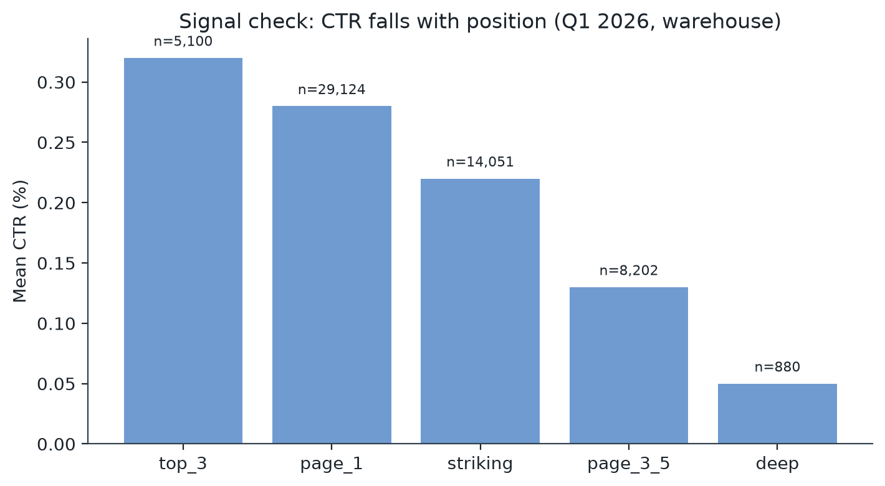
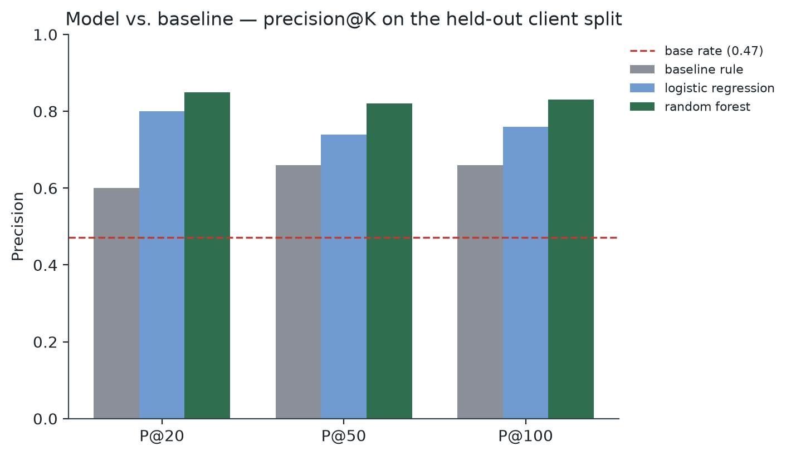
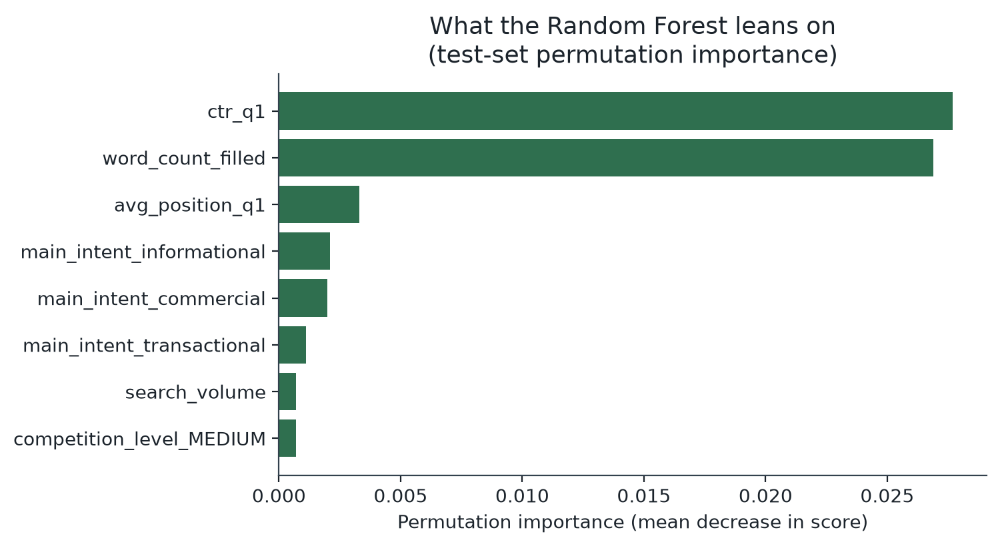

01 Abstract
Content editors can only review a handful of pages a week — which existing pages should they open first? This paper asks whether a learned model can out-rank a transparent, hand-written rule at predicting which pages will lose search traffic next month, using only signals observable this quarter. Working directly against FlyRank's real search warehouse (DuckDB over ~35M raw page-day rows), I built a page-level panel of 65,019 pages across 27 clients, defined a genuine future-window decline label (Q1 2026 daily rate vs. April 2026 daily rate — not a same-window proxy), and trained a Logistic Regression and a Random Forest against a frozen, transparent CTR-vs-position baseline rule, validated on a client-grouped, row-balanced hold-out split. The Random Forest wins on every ranking metric — precision@20 of 0.85 vs. the baseline's 0.60, against a 47.2% base rate — while overall discrimination (ROC-AUC ≈ 0.53) stays modest across all three approaches, an honest signal that forecasting a real future outcome from one quarter of history is a genuinely harder problem than the proxy labels used earlier in this project. The result: a ranked, reason-coded action queue that beats the rule at the top of the list, with its real limits stated plainly rather than smoothed over.
02 Introduction
A FlyRank content editor has limited weekly review capacity — realistically 20 to 100 pages out of a client's full catalog. Left unranked, that means guessing. This project's question, carried through every weekly milestone since Week 1: among a client's existing pages with real search demand, which ones should an editor open first, and does a learned score actually beat a rule a human could read in one sentence?
Decision supported: a content editor or SEO reviewer chooses where to spend
scarce review time — refresh copy, expand thin content, fix a CTR problem, or leave a page
alone. Unit of analysis: one content page (content_hash_id),
scored inside one client (client_hash_id, used only for grouping and
hold-out splits, never as a feature). Cost of a wrong call: ranking a
healthy page high wastes an editor's limited hours; burying a genuinely declining
high-demand page means it keeps losing traffic unseen.
Every earlier notebook in this project (W01–W05) used is_declining_label, a
proxy computed from the same window it was applied to
(trend_direction == "down") — useful for learning the workflow, but flagged
from the first week as "a stand-in, not the ideal capstone target." This paper builds the
stronger version: a label observed strictly after the decision point, on the real
warehouse, at real scale.
03 Data
Release: FlyRank/internship-warehouse (Hugging Face, gated,
instant approval), covering 2025-01-27 → 2026-06-30. Tables:
fact_content_daily_performance (grain: report_date × client × content) for the
feature and label windows, joined to dim_content for content metadata.
Windows
- Feature window (prior): 2026-01-01 → 2026-03-31 — a full quarter, everything the model is allowed to see.
- Label window (future): 2026-04-01 → 2026-04-30 — strictly after the decision point, used only to compute the outcome.
- The final panel month (June 2026) was left untouched entirely, per the dataset's sealed-test-month guidance, so it remains available as a true hold-out for future work.
Excluded, and why
- GA4 signals (sessions, engagement, AI-referral traffic) — an earlier data-contract audit found GA4 availability follows each client's onboarding date, not randomness, so it's excluded entirely rather than silently zero-filled.
content_type— after the coverage filter below, the panel is ~99% one category (keyword article); no signal left to use.- Raw IDs (
client_hash_id,content_hash_id) — pseudonymous, grouping and joins only, never model inputs. - No client names, domains, raw URLs, or raw queries appear anywhere in this project.
04 Methodology
Label
is_declining_future: compare each page's daily rate in Q1 vs. April
(impressions ÷ days with available data — not raw totals, since the windows are 90 vs. 30
days). 1 if the April daily rate is lower than the Q1 daily rate, else 0.
Coverage filter
History depth varies wildly per client. A page only enters the panel with ≥60 of 90 Q1 days and ≥20 of 30 April days of available data — otherwise a client's rate estimate rests on too few days to trust.
Features (pre-decision only)
avg_daily_q1, avg_daily_clicks_q1, ctr_q1,
avg_position_q1, content_age_days_at_decision,
impressions_cv_q1 (day-to-day volatility across the full quarter),
days_with_impressions_frac_q1, word_count_filled (+
missingness flag), search_volume, main_intent,
competition_level.
Signal checks, before building anything
Staleness (days since last update) vs. the true future label: only 5 of 65,019 pages had gone 180+ days without an update in this slice (all 5 later declined, but n is far too small to act on). Excluded from the rule — confirming, on the true label this time, the same exclusion an earlier signal audit made on the CSV proxy.
CTR vs. position tier: mean CTR falls monotonically from 0.32% (top 3) to 0.045% (deep) across 57,357 visible pages. A page with unusually low CTR for its position is a real, fixable anomaly — this became the baseline rule's core.

Baseline (frozen rule)
0.45 × visibility_score + 0.40 × ctr_gap_score + 0.15 × depth_gap_score, where
ctr_gap_score measures how far a page's CTR sits below its position tier's
median. Every scored page gets exactly one reason code
(demand_with_ctr_gap, thin_visible_page, or
general_review) and one suggested action.
Split design
Client-grouped, but row-balanced, not client-count-balanced. A first 80/20-by-client-count attempt put only 181 rows in test, because 6 of 27 clients hold 93% of all pages — reported here rather than hidden. Fixed by shuffling clients and greedily assigning them to the test bucket until it holds ~20% of rows. Still fully grouped (a client's pages never split across train/test) and time-aware by construction (the label window is strictly after the feature window for every row).
Leakage check
The label's own source columns (impressions_apr, days_with_data_apr)
are asserted absent from the feature list before training. trend_direction /
trend_pct — the CSV-era leakage trap — don't exist in this table at all.
05 Results
Same test split, same metrics, baseline frozen exactly as specified above.
| Model | P@20 | P@50 | P@100 | ROC-AUC | Avg. precision |
|---|---|---|---|---|---|
| Baseline rule (frozen) | 0.60 | 0.66 | 0.66 | 0.493 | 0.488 |
| Logistic Regression | 0.80 | 0.74 | 0.76 | 0.526 | 0.523 |
| Random Forest | 0.85 | 0.82 | 0.83 | 0.530 | 0.531 |
Test-set base rate: 47.2% — every precision@K figure above should be read against this.

What the model actually leans on
Impurity-based importance and permutation importance disagree — and that
disagreement is the real finding. Impurity importance ranks
content_age_days_at_decision and avg_position_q1 highest, but
impurity importance is known to inflate continuous, high-cardinality features regardless of
whether they help on new data. Permutation importance — measured by shuffling each column on
the held-out test set and watching the score drop — tells a different story:
ctr_q1 (0.028) and word_count_filled (0.027) are what the model
actually relies on to generalize; avg_position_q1 drops to a distant third
(0.003), and content_age_days_at_decision — the #1 impurity feature — doesn't
place in the permutation top 8 at all.

Where it's wrong
06 Limitations & honest framing
- Single prior-quarter window. Q1 2026 → April 2026 is one instance of a prior→future split, not repeated across multiple quarters. A page's April behavior could reflect a one-off event a longer backtest would average out.
- Modest overall discrimination. ROC-AUC of 0.49–0.53 means this panel does not cleanly separate decliners from non-decliners across its full range — only at the top of a ranked list.
- GA4-blind. Engagement and AI-referral signals are excluded entirely; a page's true health picture here is search-only.
- Client concentration. 6 of 27 clients hold 93% of this panel's pages;
the row-balanced split fixes evaluation validity, but the panel itself still
overrepresents a few large clients' editorial patterns, and content-type diversity mostly
disappears under the coverage filter (~99%
keyword article). - No causal claim. This ranks pages by decline risk and CTR-friction opportunity; it does not show that refreshing a page causes recovery. That needs a controlled experiment, not observational ranking.
- No claim about Google's ranking algorithm. Every signal used here is an observable, safe search/content metric — nothing in this project reverse-engineers or claims to explain how Google ranks pages.
Every result in this paper is observed, measured, and directional on this one split of this one dataset — decision-support for a reviewer, never a guarantee.
07 Ranked recommendations
Final score blends the validated model with the transparent rule:
0.65 × random_forest_probability + 0.35 × baseline_rule_score. The rule's
reason code rides along on every row, so a reviewer always sees why, not just a
number.
monitorrefresh_and_review_ctrexpand_and_refreshTop 10 (illustrative — pseudonymous IDs only)
| # | Score | Reason | Action | Impr./day (Q1) | Position | CTR |
|---|---|---|---|---|---|---|
| 1 | 0.803 | demand_with_ctr_gap | refresh_and_review_ctr | 84.4 | 0.82 | 0.04% |
| 2 | 0.798 | demand_with_ctr_gap | refresh_and_review_ctr | 249.5 | 1.10 | 0.04% |
| 3 | 0.790 | demand_with_ctr_gap | refresh_and_review_ctr | 117.3 | 2.50 | 0.08% |
| 4 | 0.790 | demand_with_ctr_gap | refresh_and_review_ctr | 105.1 | 4.02 | 0.04% |
| 5 | 0.784 | demand_with_ctr_gap | refresh_and_review_ctr | 130.7 | 0.60 | 0.02% |
| 6 | 0.783 | demand_with_ctr_gap | refresh_and_review_ctr | 143.0 | 1.68 | 0.05% |
| 7 | 0.781 | demand_with_ctr_gap | refresh_and_review_ctr | 43.3 | 1.53 | 0.05% |
| 8 | 0.780 | general_review | monitor | 142.9 | 1.61 | 0.14% |
| 9 | 0.780 | demand_with_ctr_gap | refresh_and_review_ctr | 203.0 | 1.49 | 0.03% |
| 10 | 0.780 | demand_with_ctr_gap | refresh_and_review_ctr | 163.7 | 1.22 | 0.05% |
9 of the top 10 share the same reason code, drawn from only 3 distinct clients — a real weak spot: the queue as shipped needs a per-client cap so one CTR-heavy client doesn't crowd out every other client's opportunities.
How an editor would use this tomorrow
- Open the top-K rows for the week's review capacity (K = 20–50, matched to the precision@K this paper reports).
- Read the reason code first —
refresh_and_review_ctrmeans check title, meta description, and SERP snippet before touching page content;expand_and_refreshmeans the content itself is thin for its traffic. - Treat the score as a priority order, not a verdict — the false-positive analysis above shows real cases where a flagged page was actually fine.
08 Reproducibility
Random seed 42 throughout. The warehouse query result is explicitly
sorted before any downstream split or model fit, so re-running the notebook end to end
reproduces this exact table.
- work/notebooks/capstone.ipynb View on GitHub →
- work/notebooks/w04_baseline_score.ipynb Week 4 baseline →
- work/notebooks/w05_model.ipynb Week 5 model (CSV version) →
- work/outputs/capstone_metadata.json this run's numeric receipts
- Full repository amitroy257/my-flyrank-assignment1 →
09 Acknowledgments & data credit
Built on the FlyRank ML Internship dataset. Learn more at flyrank.ai.